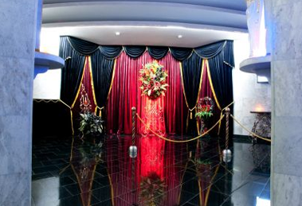

Городская ритуальная служба г. Ростов-на-Дону, ул. Орбитальная, д.1а
Полный спектр ритуальных услуг и товаров г. Ростов-на-Дону, ул. М.Нагибина, д.43
Кремация
Процесс, когда тела усопших предают огню, а потом собирают прах в специально предназначенную для этого урну, называют кремацией. Этот экономичный, эффективный и экологичный способ погребения известен еще с глубочайшей древности.
ЭКОНОМИЧНЫЙ, ЭФФЕКТИВНЫЙ И ЭКОЛОГИЧНЫЙ СПОСОБ ПОГРЕБЕНИЯ
В населенных пунктах с высокой плотностью населения кремация является довольно востребованной, поскольку дает возможность сократить площадь, которая необходима для погребения, в два раза. Христианская Европа стала активно применять такой метод со 2-й половины 19 века. В России первое специальное заведение для осуществления данных ритуальных услуг построили в городе Владивостоке в 1917-м году. Но из-за того, что в течение столетий умерших на Руси хоронили исключительно в земле, и для русской культуры сжигание людей в печи было поначалу дикостью, кремация была мало актуальной. На сегодняшний день крематории существуют в двенадцати городах нашей страны, и идея предания тела огню в последнее время становится все более популярной.
Как правило, процесс начинается с того, что родственники прощаются с усопшим в предоставленном для этого помещении. Затем покойника, лежащего в гробу, выполненном из горючего материала, помещают в специальную печь: температура в ней достигает около 1000 градусов.
В целом, процедура кремации длится примерно полтора-два часа. На следующем этапе прах собирается в предназначенную для этой ритуальной услуги урну. Ее могут поместить в колумбарий или саркофаг. Также она может быть погребена в землю с учетом всех необходимых санитарных, экологических и прочих требований и норм.
В настоящее время кремация автоматизирована, ее контролируют посредством компьютерных технологий, позволяющих довести человеческие ткани до газообразного состояния и превратить скелет в мелкодисперсную субстанцию. Слишком высокие температуры такого эффекта не имеют, а возникающее при них стеклование тканей может повредить машины. При осуществлении сжигания гроба из него удаляют стеклянные предметы, которые могут находиться внутри, снаружи счищают алюминий и стекло. Среди современных методов стоит отметить новый вариант, становящийся трендом века: из праха создают искусственный алмаз. Его называют «алмазом памяти».